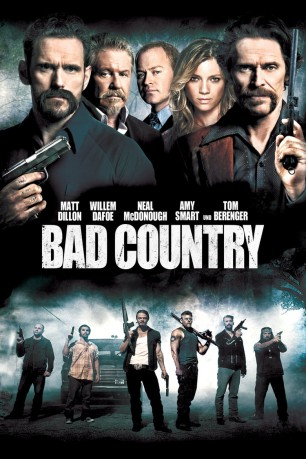

#8475 Bad Country
 
 IMDB-Wertung: 5.8 / 10
IMDB-Wertung: 5.8 / 10  Metascore: 0
Metascore: 0 
Nachdem der gesuchte Auftragskiller Jesse Weiland von Detective Bud Carter von der Baton-Rouge-Polizei verhaftet wurde, konnte dieser überzeugt werden, in Zukunft für den Cop als Informant zu arbeiten. Mit Jesses Hilfe konnte Bud eine der größten Gangsterorganisationen im Süden zerbersten und im Ansehen seiner Kollegen aufsteigen. Doch das Blatt wendet sich wieder, denn schon bald steht Bud auf der Tötungsliste des Syndikatsbosses Lutin und auch Jesse fliegt als Komplize der Polizei auf. Als Lutin dessen Familie hinrichten lässt, sinnt der frühere Killer auf Rache. Bud muss Jesse schleunigst von seinem blutigen Pfad abbringen, denn nur ein kühler Kopf hilft den ungleichen Komplizen, das Gangsterkartell auszuheben und sich gegenseitig aus der Schusslinie zu ziehen.
Jahr: 2014
Dauer: 104 Minuten
FSK: 16
Land: USA Studio: Sony Pictures Home EntertainmentTonspuren: DTS - ,
Untertitel: Deutsch,
Auflösung: 1080p (1920x1080) Größe: 7055 MB
Genre: Action, Thriller, Drama, Krimi, Mystery
Regisseur: Chris Brinker
Drehbuch: Jonathan Hirschbein
Soundtrack: Jeff Danna, John Fee
Darsteller:
 Matt Dillon als Jesse Weiland
Matt Dillon als Jesse Weiland Willem Dafoe als Bud Carter
Willem Dafoe als Bud Carter Neal McDonough als Daniel Kiersey
Neal McDonough als Daniel Kiersey Amy Smart als Lynn Weiland
Amy Smart als Lynn Weiland Chris Marquette als Martin Fitch
Chris Marquette als Martin Fitch Don Yesso als Captain Bannock
Don Yesso als Captain Bannock Kevin Chapman als Daniel Morris
Kevin Chapman als Daniel Morris Christopher Denham als Tommy Weiland
Christopher Denham als Tommy Weiland Alex Solowitz als Buzz McKinnnon
Alex Solowitz als Buzz McKinnnon John Edward Lee als Catfish Stanton
John Edward Lee als Catfish Stanton Ritchie Montgomery als Nady Grace
Ritchie Montgomery als Nady Grace Frederick Weller als Detective Shepherd
Frederick Weller als Detective Shepherd- Jeff Leaf als David Marandino
 Bill Duke als John Nokes
Bill Duke als John Nokes Tom Berenger als Lutin Adams
Tom Berenger als Lutin Adams- Aldo Juliano als Long Haired Gunman
 Dane Rhodes als Edgard Billings
Dane Rhodes als Edgard Billings- Lex D. Geddings als Gerald Kaye
 John Lafayette als Keith
John Lafayette als Keith J.D. Evermore als Murphy - Captain of the Guards
J.D. Evermore als Murphy - Captain of the Guards- Ron Gural als Robert Sherman
 Eddie Matthews als Prison guard
Eddie Matthews als Prison guard- Gayle James als Lutin's Girl #1
 James Lew als Doctor
James Lew als Doctor- Roger Behle als Bistro Musician
- Mary Lane Haskell als Newscaster
- Stephanie Harvey als News Anchor (V.O.) (uncredited)
 Luke Hawx als Doorman (uncredited)
Luke Hawx als Doorman (uncredited) Hans Marrero als Naseem (uncredited)
Hans Marrero als Naseem (uncredited)- Jason Stanly als Uniformed Deputy Sheriff (uncredited)
- Shirley Tregre als Dining Patron (uncredited)
 Olga Wilhelmine als Waitress (uncredited)
Olga Wilhelmine als Waitress (uncredited)- Patrick Brinker als Detective Cobb
- Lazarus Jackson als ATF Agent Watkins
 Jake La Botz als Jacket
Jake La Botz als Jacket- Mike Barnett als Duty Guard
- Don 'Bud' Connor als Judge Donner
- Pat Fisher als 'Ma' Carter
- Matt Thompson als Jake
- Hugh Wilson als Charlie Broward
- Dylan Yesso als Spider
- John Braymer als District Attorney
- Erika Bruun-Andersen als Sherry
- Caitlin Kearney als Lutin's Girl #2
- Mike Quintana als Libyan
- Duane Cothren als Police Officer
- Jarvis Green als Black Prisoner
- Garth Currie als Club Patron (uncredited)
- Bobby Greer als Dining Patron / Bar Scene (uncredited)
- Zach Hartman als Club Patron (uncredited)
Datei: X:\2014(A-F)\Bad Country (2014, FSK16, 1920x1080).mkv seit 07.03.2018
Festplatte: HD 2013(I-Z)-2014(A-Z)
 Es gibt insgesamt 119 Filme in der Gruppe '2014(A-F)'
Es gibt insgesamt 119 Filme in der Gruppe '2014(A-F)'